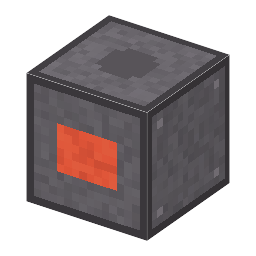

説明
①子ども ヒ素を取り出し、ガリウム・ヒ素・リンの結晶を作る、密閉した炉。
②学生 電気 3kW、1回20秒。①白ヒ素＋コークス → ヒ素 ②ガリウム＋ヒ素＋赤リン → GaAsP の板4枚（ポリエチレン瓶は上に戻る）。
③大人 石英の管を閉じて熱し、毒の気体を外に出さない。①は As2O3 + 3C → 2As + 3CO。
④ガチ ヒ素は毒なので、工場では閉じた装置と排気の処理で扱う。⚠️ 工業の材料としてだけ。
作り方
使い道
（このアイテムを使うレシピは無い）